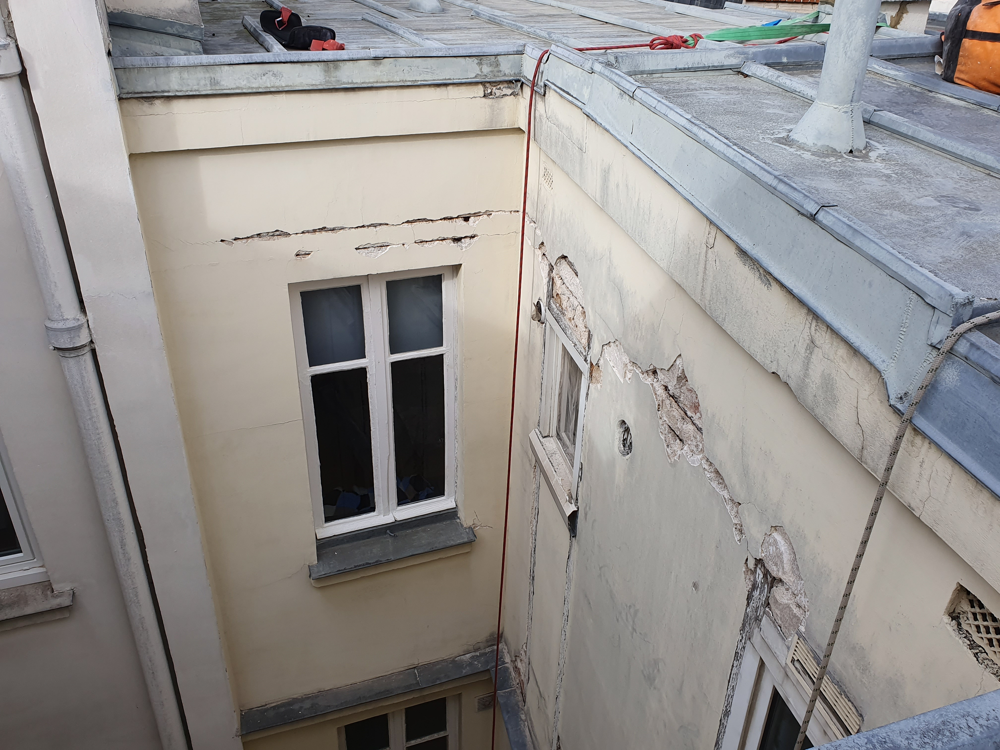

Rénovation de Courettes
Valorisez vos espaces intérieurs inaccessibles sans l'encombrement d'un échafaudage.

Peinture & Ravalement
Mise en peinture des murs, courettes et puits de lumière pour redonner de la clarté aux appartements donnant sur cour.
Réfection de descentes
Remplacement des fontes, des PVC et des conduits d'eaux usées ou pluviales en conduits étroits.
Traitement des bois
Ponçage et lasure des menuiseries et pans de bois apparents souvent négligés par manque d'accès.
Protection Anti-Pigeons
Installation de dispositifs discrets (pics, filets) pour maintenir la propreté des rebords et corniches.
L'avantage de la corde
Dans les courettes parisiennes où le passage fait parfois moins d'un mètre, nos cordistes sont les seuls à pouvoir intervenir rapidement, sans bloquer les parties communes.
Demander un devis gratuit